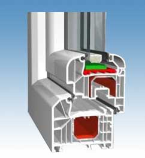
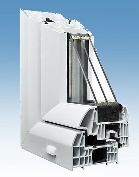

Plastová okna
Výhodné řešení s důrazem na tepelnou izolaci, dlouhou životnost a dostupnost barevných dekorů.
Dodáváme plastová okna a dveře, eurookna a související doplňky. Pomůžeme s výběrem vhodného řešení pro novostavby i rekonstrukce a připravíme nezávaznou cenovou nabídku.
Na starém webu je uvedeno, že plastová okna a dveře jsou standardně dodávána v bílé barvě a za příplatek v jednostranném i oboustranném dřevodekoru nebo barevné fólii. Na tuto nabídku navazujeme v modernější a přehlednější podobě.
Vhodné řešení vybíráme podle typu stavby, požadavku na izolaci, vzhledu a rozpočtu. Díky tomu dokážeme doporučit variantu, která bude dávat smysl technicky i cenově.

Výhodné řešení s důrazem na tepelnou izolaci, dlouhou životnost a dostupnost barevných dekorů.

Pomůžeme s výběrem profilového systému i vhodného zasklení podle typu stavby.
Řešíme i dveře, barevné fólie, dekory a další prvky pro sladění s domem.